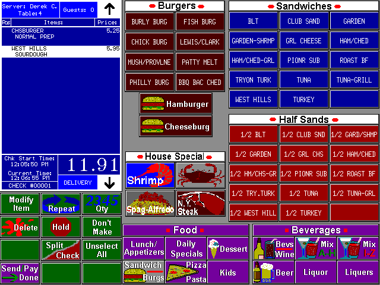
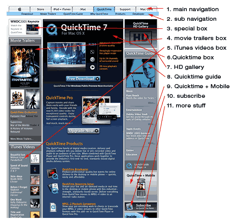
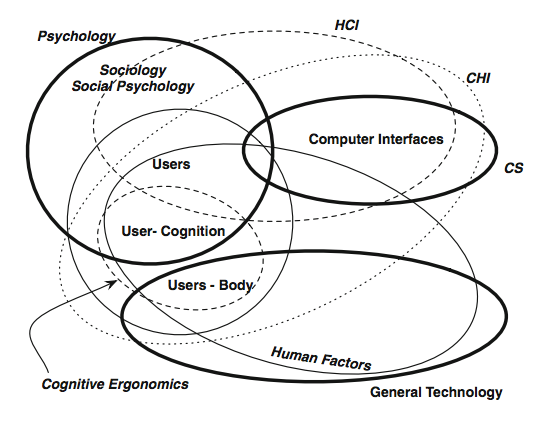
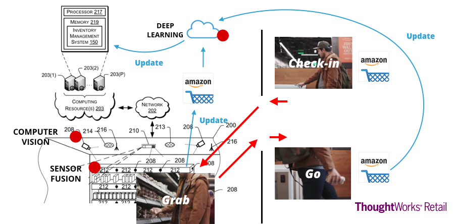
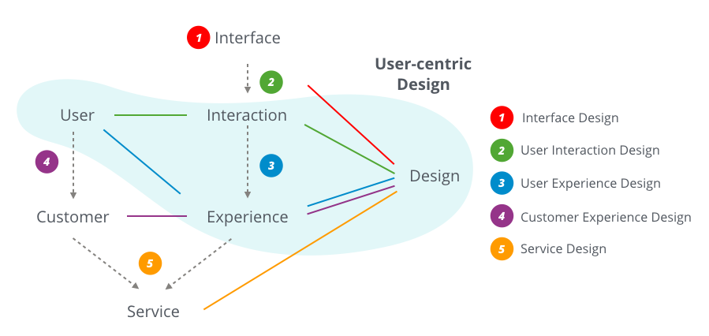

「真‧领导」提问：我们听到的用户体验设计、交互设计、客户体验设计、服务设计这些概念应该如何区分呢？
让我们从历史的角度，看看「服务设计」是如何演变到今天这个样子的。
界面设计（Interface Design）
设计始终为现实世界服务，今天我们所做的设计，都源于GUI开始流行的那个时代，那时候我们谈的最多的，是「界面设计（Interface Design）」。
这里的界面，就是特指人机界面。而那个时代的人机界面有如下特点：
- 任务驱动（Task-driven）：所有功能背后都有一项任务作为功能存在的基础；
- 固定的流程：输入输出的过程被设定好、界面决定了使用方式，而不是使用方式决定界面。
- 使用大量隐喻：早期图形界面中的设计隐喻广泛存在，例如窗口、工作区域、按钮、软盘、桌面、表单、标签栏等等；
在这个背景之下，设计师的作用变成了：
- 了解使用者的任务，对任务进行优先级排序；
- 为最高优先级的任务设计流程；
- 用隐喻完成界面的组装。
在这个时代，大部分的界面设计是需要说明书、和反复练习的，真正在于该时代设计多用于商用，对于用户而每天处理的任务繁多，多任务导致「多入口」，则用户通过训练在真实环境中准确找到入口。

上图是早期POS系统的设计，在这个设计中存在发现大量「入口」，以及一定的隐喻和视觉引导，包括颜色、区域、框体、图标等。而颜色的选择、框体的摆放、由设计者决定——谁能告诉我紫色和红色谁的优先级更高。通过频繁的使用和记忆，是否符合直觉并不重要，因为这是你每天必须做的工作。
「多入口」和「隐喻」成为早期用户界面设计的标准，这一标准一直影响到早期的界面设计，例如，框体设计成为主流，下图是苹果公司早期首页设计，横向的菜单、大量的功能分区、大量带标题栏的框体、多个按钮的设计成为那个时代的特征。

用户交互设计（User Interaction Design）
关于把人放置于人机交互中心的讨论早在上世纪60年代就已开始，Nickson在1969年的论文《Man-Computer interaction: A challenge for human factors research》提出：
The need for the future is not so much computer oriented people as for people oriented computers.
这几乎是人机交互（Human Computer Interaction）的最早理论基础。在这一理论基础上，理论开始向实践进行演化（开始谈论设计）。
1990年ROBERT B. ALLEN的关于用户模型的重要论文《User models: theory, method, and practice》中提到,随着计算机系统的复杂，行业开始将讨论的中心从界面、文档、或推导过程，转向用户。
一定程度上，专家系统（Expert Systems）的演变催生使用者对计算机「可用（Usable）」和「有用（Useful）」的需求。1987年，科罗拉多大学计算机和认知科学学院的Gerhard Fischer的论文《Making Computers More Useful and More Usable》可能最早讨论计算机可用性的文献。Fischer在文中记述：
Useful computers which are not usable are of little help; but so are usable computers which are not useful. One of the major goals of our research is to achieve these two goals simultaneously. （有用却不可用、和可用却没什么用的计算机一样对我们没什么帮助。我们研究的目的，是找寻将二者结合起来的方式）
彼时，计算机开始从一种辅助任务完成（Task Processor）的工具，变成一种帮助我们更好决策的智能辅助系统（Intelligent Support Systems）。这一变化使得人们使用计算机的路径开始变的具有独立性和探索性，而不简单是一系列固定任务的组合。
这个时代里大量理论和实践开始完善，以用户为中心的设计（User-centric Design）成为趋势，此趋势下的核心逻辑是：
- 使用者需求被置于中心；
- 界面被认为是人机交互中的一部分，而不是全部。

上图（来源）中展示的是这个时代设计师所需要涉及的知识领域，除了计算机界面，还需对人因工程、社会心理学、认知学、人体工程等由涉猎。
值得一提的是，User-centric Design（UCD）的兴起在中国也成就了中国最早的互联网设计社区UCD中国，并培养了中国互联网行业最早一批设计师与产品经理。
用户体验设计（User Experience Design）
用户体验在UCD早期就被提及，1999年用户体验被归于人体工程学，并被ISO9241-210定义为：人对于产品、系统、或服务使用结果（真实使用或预知）的印象与反馈。
而用户体验被加上设计二字，则意味着其从理论朝实践的转变。第一份讨论用户体验设计的文献出版于1998年的《Web navigation: designing the user experience》。
可以说，用户体验的兴起，与互联网的兴起息息相关。计算机系统出现了第三种类型的用户，这类用户：
- 不将计算机当作必须完成任务的处理器；
- 不将计算机当作辅助完成复杂任务的专家系统。
「浏览」成为一种新的使用场景。2002年Jesse James Garrett的《用户体验要素》出版，此书具有划时代的意义，其真正的意义在于实践性，他将用户体验分作5个层次，并将系统分作软件交互和内容平台。

可以说在UCD的前期，虽然人们知道了用户的重要性，但在实践层次依然难以将对用户的考虑和设计本身结合在一起。而《用户体验要素》的理论丰富了交互理论——交互只是体验的一部分，而且还只是某一种类型软件系统的一部分。
在2002年前后，用户体验替代交互大行其道。
客户体验设计（Customer Experience Design）
客户体验（Customer）的概念在1994年就被提出，Carbone, Lewis P和Haeckel, Stephan H.在《Marketing Management》杂志1994年冬季刊上第一次提到了用工程的方式优化客户体验。
《Engineering Customer Experiences》一文几乎涵盖了后来所有互联网客户体验设计的全部，这些观点包括：
- 全场景的体验（Orchestrating Experience），所有体验点都应相互关联；
- 高瞻远瞩的设计，所有体验都应该有更高的目标，比如让客户快乐；
- 自然和符合直觉；
- 基于数据和分析的设计过程。
这些原则都对后世、直到服务设计领域都产生了极大影响。客户体验设计的核心逻辑是：
- 用户不再是中心，客户和品牌的交互过程才是；
- 用户目标不再是重点，而是更远大的品牌终极目标；
- 用户和计算机的交互不再是重点，而是所有产品和服务体验的总和。
服务设计（Service Design）
从客户体验设计到服务设计的演变，变得极为自然，既然所有产品和服务体验的总和是重点，那么在每一个点上提供好的服务、并将其串联就变得关键。
计算技术发展到今天，计算机早已不是工具，而是人们大部分活动的基础。但由于系统的建设晚于流程的建立、流程的建立又晚于客户需求的变化，这几乎成为不可解的谜题。我们当然可以设计理想的客户体验，但最后的结果无外乎两个：
- 对于旧系统，强依赖于后台逻辑和系统集成导致数据和体验的不一致；
- 对于新系统，则难以在未来和核心系统整合，服务体验难以规模化，和真正商业化。
解决这些问题，不单单只是技术上的，还有中后前台业务流程的整合，这便是服务设计尝试解决的第一大问题。
另一个服务设计尝试解决的问题更多来自于机会。在现实场景中，现实和虚拟的界限被打破、更多的可计算设备被制造，越来越多的数据开始被收集、越来越多独特的交互形式正在发生，加之云端和智能技术的发展，全新的服务模式可以由此产生。
诸如Amazon Go这样结合了机器视觉、传感器、深度学习、移动应用、云计算等多项技术的全新零售服务体验，在未来一定成为主流（而不一定是Amazon Go）。

服务设计就成为了各类新旧技术和流程天生的粘合剂。
设计的汤
今天我们所谈论的设计，就像一锅乱炖的汤，学者和实践者在过去近50年的时间里，不断增加新的概念或扩充已有概念：
- 界面就是一切；
- 用户交互才是中心，用户模型、认知心理学、人因工程学等被加入；
- 体验被提出，用户交互被缩小到整个用户体验的一部分；
- 用户不再重要，客户的全局体验变成核心；
- 客户与体验被整合，前中后台的流程、系统、技术、员工等要素被融入到整体设计里。

这碗设计的汤，发展到今天，已经变得无所不包了，只是曾经的边界都在被打散，无论是：
- 机器和人类；
- 界面和交互；
- 信息和内容；
- 功能和体验；
- 用户和客户；
- 线上和线下；
- 前台和后台；
- 服务和产品；
- 技术和情感。
设计师的成长，已经超越了技能，而作为想成为、或者已经是服务设计师的你，是否能够在这些边界中游刃有余，懂得取舍呢？